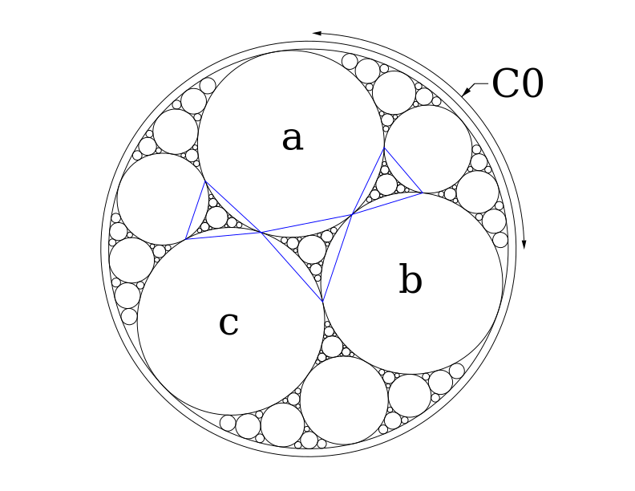
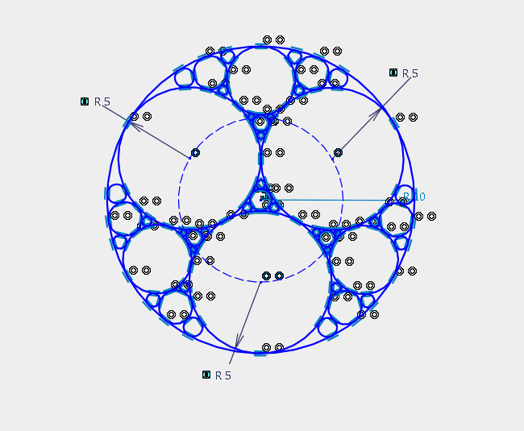

Фракталы представляют собой довольно обширный класс математических объектов. Единственным условием характеризующим некоторую функцию как фрактальную является её самоподобие. Любой рекурсивный алгоритм осуществляющий замещение некоторой локальной области геометрии её инверсией можно назвать фрактальным. Еще одной особенностью фракталов является отсутствие сходимости, этим они отличаются от сглаживающих рекурсивных функций таких как алгоритм Чайкина.
На сегодняшний день сообществом математиков построено большое количество красивых и сложных фракталов. Иногда фракталы находят своё применение в архитектуре, но в связи с тем, что строения и без того являются сложными объектами, архитекторы не спешат их использовать. Лично я никогда не был фанатом фракталов, для меня гладкие интерполированные формы более привлекательны, так как они ассоциируются с кинетической красотой, динамикой ветра, течением воды. Многие фракталы слишком статичны для реализации в масштабных пропорциях. Силы и напряжения действующие в строительных конструкциях вынуждают форму сглаживаться и минимизироваться.
Тем не менее, в данной статье мы рассмотрим принцип построения одного фрактала. Моей целью является демонстрация методов программного взаимодействия со средой эскиза. Построение супер сложных объектов среде эскиза бессмысленно, поскольку большое количество геометрических зависимостей будет трудно рассчитать. Специализированные программы для фракталов используют простые системы рекурсивных трансформаций, в то время как решатель зависимостей нуждается в сложной системе нелинейных уравнений.

Независимо от системы, алгоритм построения окружности касательной к трём другим, требует дополнительных стабилизирующих условий для выбора определённого решения из множества подходящих. К сожалению, в большинстве САПР систем нельзя выбирать решения исходя из свойств окружности, например, минимальная площадь или максимальный периметр. Как правило, пользователю разрешается вводить точку наиболее близкую к искомому решению. В качестве таких точек, я решил использовать центры треугольников, построенных на попарном пересечении окружностей (синие треугольники на изображении выше). По этой причине наш алгоритм принимает на вход не три окружности, как в классическом решении, а четыре - (a, b, c) и С0. В варианте для Grasshopper’a программа выгладит следующим образом …
# tri это наши [a, b, c] в списке
def subdiv(a, b, c, stop):
loop = [a, b, c, a]
cntr = gh.ConstructPoint(0, 0, 0)
for n in range(3):
xsct = gh.CurveXCurve(loop[n], loop[n+1])[0]
cntr = cntr + gh.Division(xsct, 3)
d = gh.CircleTanTanTan(a, b, c, cntr)
if stop > 1:
for n in range(3):
subdiv(loop[n], loop[n+1], d, stop - 1)
ret.append(d)
subdiv(tri[0], tri[1], tri[2], 3)
tri.append(tri[0])
for n in range(3):
subdiv(tri[n], tri[n+1], c0, 4)Что касается CATIA, то здесь дела обстоят немного сложнее. Дело в том, что среда эскиза, в которой мы будем выполнять построения, имеет немного другую логику. Изначально, геометрия строится без связей с окружением, задаются только внутренние свойства, помогающие решателю в определении результата. Конкретные отношения между элементами добавляются последующими вызовами функций. Если проводить аналогию с языками программирования, то “решатель” можно назвать декларативным, в то время как Grasshopper будет функциональным. Для ручного ввода, декларативность является наиболее оптимальным решением, в то время как функциональный подход больше пригоден для алгоритмического использования. Хотя есть системы - T-flex например, в которых эскизные среды реализованы с использованием функциональной логики. Но несмотря на это, средства выделения контура в них, совершенно не предназначены для процедурного применения.
Ещё проблем добавляет склонность решателя, из множества результатов выбирать наиболее бредовые.
Так, вместо d касательной abc, он обязательно выберет c = d. Именно поэтому, корректное начальное размещение объектов для нас является необходимым. В случае удачного решения, стабильность полностью определённого эскиза гарантируется.
Приступим к рассмотрению алгоритма. Для начала подключимся к работающей CATIA, с активным документом. Создадим геометрическое множество, плюс несколько глобальных переменных…
using ShapeFactory
app = dispatch("CATIA.Application")
prt = app.ActiveDocument.Part
gst = prt.HybridBodies.Add()
gst.Name = "Output"
xy = prt.FindObjectByName("xy plane")
sk1 = gst.HybridSketches.Add(xy)
f2d = sk1.OpenEdition()
con = sk1.ConstraintsКак мы уже говорили, алгоритм принимает на вход одну описанную окружность - C0, и три вписанных, попарно касательных - abc. У окружностей должны быть погашены все степени свободы. Для этого большую окружность зацепим в нулевой точке, и зададим ей радиус. Фиксированная вертикальная ось необходима для стабилизации внутренней триады.
function base_circle(rad)
pt0 = f2d.CreatePoint(0, 0)
con.AddMonoEltCst.(0, pt0) # фиксация
ax0 = f2d.CreateLine(0, 0, 0, rad * 3)
ax0.StartPoint = pt0
ax0.Construction = true
con.AddMonoEltCst(13, ax0) # вертикальное ограничение
c0 = f2d.CreateClosedCircle(0, 0, rad)
c0.CenterPoint = pt0
rad = con.AddMonoEltCst.(14, c0)
rad.Dimension.ValuateFromString("$(rad)mm")
return c0, ax0
endВнутренние окружности нужно ограничить некоторым радиусом для того, чтобы в ходе манипуляций он не стал нулевым. Вначале, мы связываем их между собой, затем отключаем ограничение по радиусу, и крепим к большому кругу. К сожалению, мы не можем сказать решателю, что окружности должны быть одинаковыми по радиусу. Как альтернативный вариант, можно закрепить их центры на некоторой вспомогательной окружности.
function base_triad(cc0, ax0)
# вспомогательная окружность
cx = f2d.CreateClosedCircle(0, 0, cc0.Radius - 1)
cx.CenterPoint = cc0.CenterPoint
cx.Construction = true
# базовая триада
tri = map((2pi/3):(2pi/3):2pi) do ang
# центр окружности
pt = f2d.CreatePoint(sin(ang) * cx.Radius, cos(ang)*cx.Radius)
pt.Construction = true
# собственно окружность
cc = f2d.CreateClosedCircle(sin(ang), cos(ang), 1)
cc.CenterPoint = pt
rad = con.AddMonoEltCst.(14, cc) # временный радиус
rad.Dimension.ValuateFromString("$(cc0.Radius / 2)mm")
cc => rad
end
tri, rad = first.(tri), last.(tri)
# крепим центры к вспомогательной окружности
con.AddBiEltCst.(2, getproperty.(tri, :CenterPoint), cx)
# взаимное касание
push!(tri, tri[1])
for n in 1:3
con.AddBiEltCst(4, tri[n], tri[n+1])
end
# фиксируем первую окружность на оси
con.AddBiEltCst(2, tri[1].CenterPoint, ax0)
map(x -> x.Deactivate(), rad) # отключаем радиусы
con.AddBiEltCst.(4, tri[1:end-1], cc0) # задаём касание к большой окружности
return tri[1:end-1]
endЕсли измерять алгоритм управляющими конструкциями, а не количеством строк, то он достаточно простой. Для построения окружностей касательных к трём другим, я написал отдельную функцию, которая размещает их в центрах, упомянутых в начале статьи, треугольников.
function circle_tri(a, b, c)
loop = (a, b, c, a)
cntr = [0, 0, 0]
# расчет геометрического центра
for n in 1:3
pt = f2d.CreatePoint(0, 0)
pc = con.AddBiEltCst.(2, pt, (loop[n], loop[n+1]))
cntr += pt.GetCoordinates([0, 0, 0])[2] ./ 3
map(x -> x.Deactivate(), pc)
end
# создание требуемой окружности
cir = f2d.CreateClosedCircle(cntr[1], cntr[2], 0.01)
# без сортировки алгоритм не работает
con.AddBiEltCst.(4, cir, sort([a, b, c], by=x -> x.Radius, rev=true))
return cir
endКак и полагается, алгоритм построения фрактала в четыре раза короче, чем подготовка входных данных.
function subdivide(a, b, c, stop)
loop = (a, b, c, a)
x = circle_tri(a, b, c)
if stop > 1
for n in 1:3
subdivide(loop[n], loop[n+1], x, stop-1)
end
end
end
c0, ax = base_circle(10)
a, b, c = base_triad(c0, ax)
subdivide(a, b, c, 2)
loop = (a, b, c, a)
for n in 1:3
subdivide(loop[n], loop[n+1], c0, 3)
end
sk1.CloseEdition()
prt.Update()
Результат работы программы с включенными ограничениями. Выглядит, конечно, всё это устрашающе, особенно если представить себе систему уравнений, с которой пытается справиться решатель в этот момент.
Центральную триаду можно было построить проще. Для указания того, что радиусы окружностей должны быть равными, не накладывая при этом ограничение на сам радиус, необходимо размерное ограничение одной окружности определить как образец (Reference), радиусы других окружностей через формулы сделать равными образцу. Но на размере программы это упрощение никак не отразится.
Ошибка возникла когда я попытался обойтись без решателя, используя средства Generative Shape Design. Компонент HybridShapeCircleTritangent для стабилизации решения использует довольно хитрую схему. Вместо вспомогательной точки, пользователь должен вводить числа задающие условия касания к базовым окружностям. В основной среде этого нет, мы просто выбираем необходимый вариант. Но если мы используем API, то нам придётся вводить кучу мутных чисел.
Так вот, помимо того, что указанный компонент нестабилен по отношению к результату, он имеет зону в кторой построить окружность просто невозможно. К примеру, у Grasshopper’a алгоритм сходится на всём фрактале.
При относительно малом радиусе с, построить в зоне X окружность касательную abc нельзя. Обойти ошибку возможно, если разделить b на несколько частей. Но опять же, алгоритм при этом не стабилизируется и разрушается во время изменений вносимых в модель.
Если вас заинтересовала тема фракталов, следует учесть, что в общем случае фрактальная геометрия несовместима с САПР. Существуют методы преобразования фракталов в полигональную сетку, но вот последующее преобразование в NURBS практически невозможно. Хотя для моделирования красивой геометрии вовсе необязательно чтобы она была фрактальной. Впечатляющий результат могут дать системы рекурсивных функций или сложные топологические операции.